4.3 Laboratório Prático 3: Orquestração Multiagente e Mapeamento Estratégico de Recursos via CrewIA
Análise e Objetivo Geral

Este laboratório prático tem como objetivo capacitar o usuário na arquitetura, configuração e execução de fluxos de trabalho autônomos utilizando o ecossistema CrewAI com o Crew Studio (No-code/Low-code) CrewAI Enterprise (2026), que é uma solução inovadora que permite estruturar grupos de agentes de IA de forma totalmente visual e sem programação. O presente laboratório vem demonstrando a evolução de agentes isolados para sistemas multiagentes complexos, o experimento foca no mapeamento estratégico, análise e alocação de recursos institucionais, fornecendo aos gestores um panorama inteligente e preditivo para auxiliar na tomada de decisões de alto nível.
Ao longo deste laboratório, você aprenderá a coordenar dois agentes inteligentes: um Agente de IA Analista, que varre a internet em busca de editais de fomento à pesquisa, inovação e extensão abertos em 2026, e um Agente de IA Consultor, que filtra as oportunidades voltadas para Universidades Federais. Ao final, o fluxo gera automaticamente um Relatório Executivo estruturado em Markdown/CSV contendo os órgãos financiadores, valores máximos, prazos e o potencial impacto estratégico para a instituição. Além disso com Crew Studio, podemos agendar a tarefa para ser executada periodicamente, e assim efetuar um monitoramento e atualização constante dos rel
O CrewAI Studio atuará como a interface de captação inteligente do Escritório de Dados, capturando o que está desorganizado e caótico fora da universidade (na web), transformando isso em dados limpos e estruturados (CSV), para que o ETL tradicional (Extract, Transform, Load - Extrair, Transformar e Carregar) e as ferramentas de BI da instituição possam absorver essa informação e exibi-la portais da alta gestão da universidade.
1° Passo: Cadastro e Login
Necessáriamente precisa efetuar o login, com e-mail e senha, no Crewai pelo link: (https://login.crewai.com/), na tela inicial terá opção para cadastra-se ou continuar com alguma conta do Google, conforme figura 1.
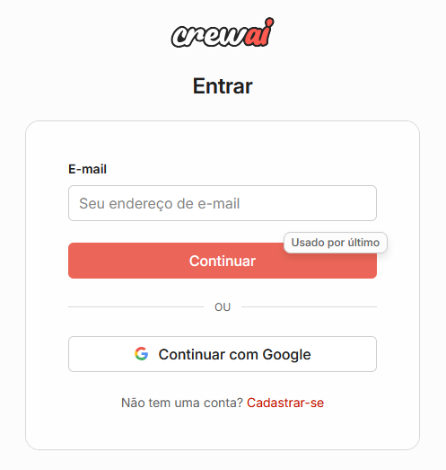
Em seguida entrará no ambiente do dashboard, precisa localizar a ferramenta disponível “Crew Studio” na aba direita, e então clique no link correspondente.
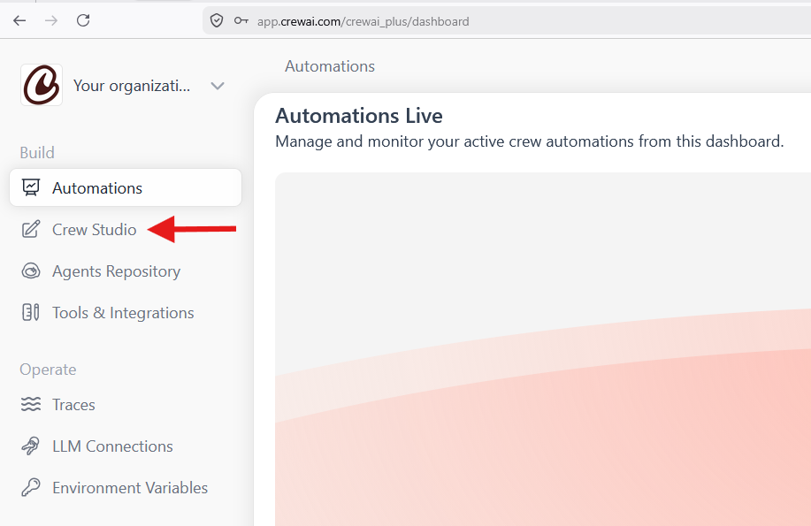
2° Passo: Criando o seu Workspace e Projeto
Já dentro do “Studio”, precisamos descrever em linguagem natural a automação que precisamos construir dentro da caixa de texto, como sugestão para este laboratório usar o seguinte conteúdo, próximo da realidade da Unifesp:
“Crie um fluxo de trabalho com o CrewAI usando o modelo GPT. Preciso de um Agente de Analista que use a ferramenta de busca para rastrear editais de fomento à pesquisa, inovação tecnológica e extensão abertos no Brasil e internacionalmente para o ano de 2026. Adicione um Agente de AI Consultor que receba esses dados brutos da internet, filtre apenas os editais onde Universidades Federais são elegíveis e organize tudo em um Relatório Executivo em formato Markdown/CSV contendo: Órgão Financiador, Objeto do Edital, Valor Máximo do Financiamento, Prazo de Submissão e o Impacto Potencial para a instituição.”
Em seguida clique no botão indicado por seta azul, para enviar o texto, indicado pela seta 2, e aguarde até final da construção dos agentes de IA em etapas, acampanhando os movimentos gerados na aba a direita e na área correspondente a “Canvas” à esquerda.
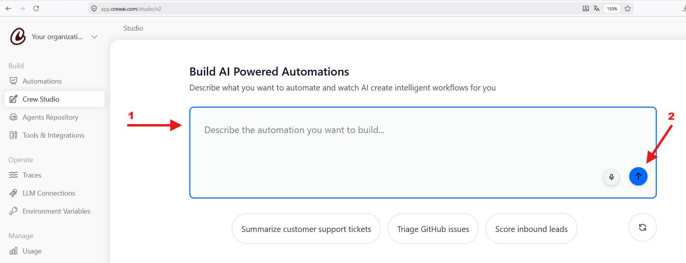
Após término do processamento e de forma autônoma na criação em implementação do código (No-Code), irá aparecer os seguintes itens representados pelas indicações das setas da figura 4 a representação do fluxo:
📋 Estrutura de Execução do Ecossistema CrewIA
- Agente de IA: Analista de Editais de Fomento
- Objetivo: Rastrear e identificar editais de fomento à pesquisa, inovação tecnológica e extensão para 2026.
- Agente de IA: Consultor AI para Analista Institucional
- Objetivo: Filtrar editais específicos para Universidades Federais e criar relatórios estruturados.
- Tarefa 1: Buscar Editais Brasileiros de Fomento 2026
- Ação: Coleta e mineração de editais em agências nacionais.
- Tarefa 2: Buscar Editais Internacionais de Fomento 2026
- Ação: Coleta de editais internacionais (execução configurada em paralelo).
- Tarefa 3: Filtrar e Analisar Editais para Universidades Federais
- Ação: Filtragem semântica e análise de elegibilidade institucional.
- Tarefa 4: Gerar Relatório Executivo de Editais
- Ação: Consolidação e criação do relatório final formatado em Markdown e exportado em CSV.
- Gatilhos/Eventos (Triggers): Configuração de gatilho específico
- Ação: Executar o fluxo de trabalho de acordo com a configuração de tempo.
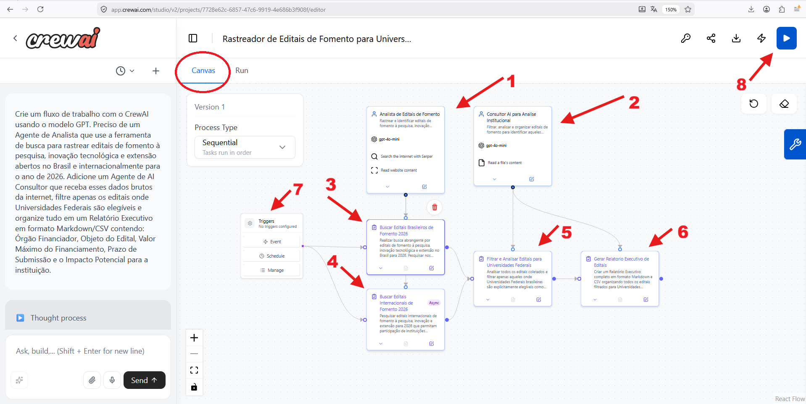
Como saída final, terá como previsão um relatório executivo conterá exatamente como foi solicitado:
- Órgão Financiador
- Objeto do Edital
- Valor Máximo do Financiamento
- Prazo de Submissão
- Impacto Potencial para a instituição
Todos os componentes, estarão interligados por setas de conexão são geralmente chamadas de conectores ou linhas de fluxo de forma ordenada e lógica para execução deste laboratório.
3° Passo: Analisar os Agentes criados (Os Personagens)
Para este laboratório, foram criados dois Agentes de IA, definido como Analista de Editais e Consultor AI para Analista Institucional, que internamente possuem a LLM padrão do “Crew Studio”, que foi GPT-4o-mini, é um modelo de Inteligência Artificial da OpenAI, desenvolvido para ser a versão mais rápida, barata e eficiente da sua linha de modelos,possui uma grande janela de contexto de 128.000 tokens e permite executar o fluxo de trabalho e prompts sem estourar o orçamento e sem a necessidade de uma máquina local com GPUs potentes na fase inicial deste laboratório.
Como funciona o consumo no CrewAI: Quando você usa o modelo padrão (gpt-4o-mini) na nuvem, você não precisa pagar a OpenAI diretamente. O CrewAI cuida de todos os custos de tokens nos bastidores e abate essa atividade direto da sua cota de execuções mensal (CrewAI Docs (2026)).
Pode-se altenar a LLM em uso ao clicar no ícone de edição dentro do agente de IA, conforme as figuras 5 e 6, e em seguida clicar em “Save”, mas para este laboratório, manter a LLM padrão.
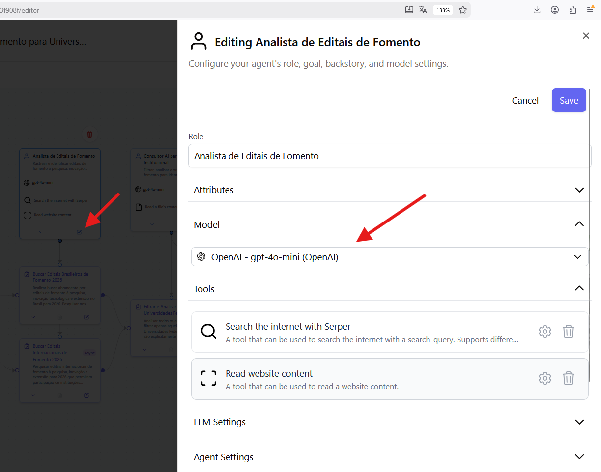
Na figura 6, demonstra a facilidade em localizar outro modelo de LLM disponível para uso.
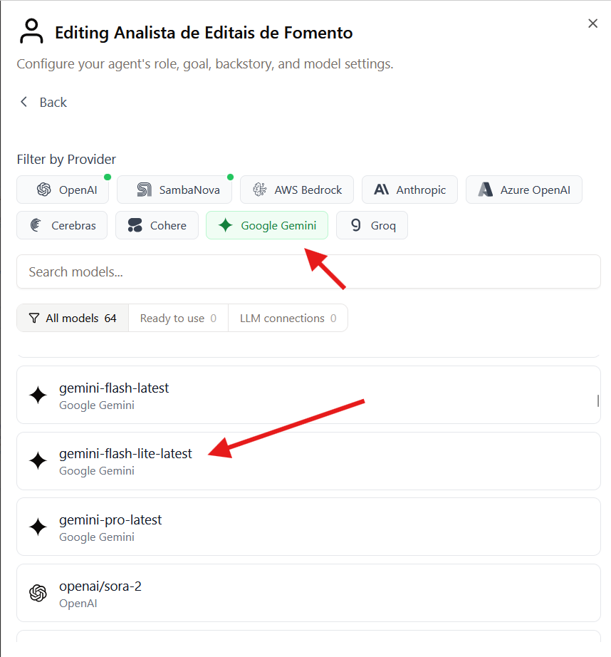
4° Passo: Analisar as definições das Tarefas (O que deve ser feito)
No ecossistema do CrewAI, um Agente sem uma Tarefa é um especialista sem trabalho. A seguir são as tarefas, com escopo definido, em quem os os agentes já pré definidos irão executar ao longo do fluxo. Na figura 7 está descrito a tarefa do primeiro agente Analista de Editais, que é a tarefa de busca em editais brasileiros de formento no ano 2026, onde na descrição definimos o seguinte prompt:
“Realizar busca abrangente por editais de fomento à pesquisa, inovação tecnológica e extensão no Brasil para 2026. Pesquisar nos principais sites de agências de fomento brasileiras: CNPq, CAPES, FINEP, FAPESP, FAPERJ, FAPEMIG e outras FAPs estaduais. Coletar informações sobre: nome do edital, órgão financiador, objeto/objetivo, valor máximo de financiamento, prazo de submissão, critérios de elegibilidade e links para o edital completo.”
Na Saída esperada, completamos com: “Lista detalhada dos editais brasileiros de fomento para 2026 com todas as informações coletadas em formato estruturado, incluindo dados sobre elegibilidade de universidades federais.”
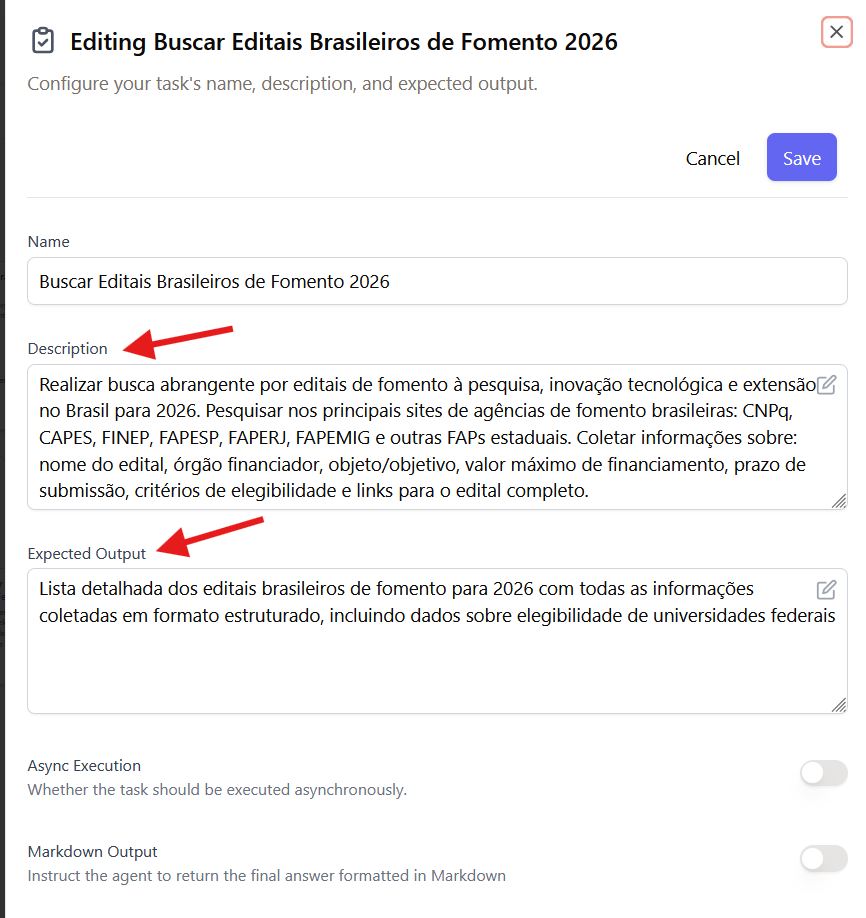
Na figura 8, temos a continuação de tarefas que este mesmo agente irá buscar em editais internacionais, como o seguinte prompt: “Pesquisar editais internacionais de fomento à pesquisa, inovação e extensão para 2026 que permitam participação de instituições brasileiras, especialmente universidades federais. Focar em: European Research Council (ERC), National Science Foundation (NSF), NIH, British Council, Alexander von Humboldt, programas Horizon Europe, DAAD, e outros organismos internacionais de fomento. Coletar as mesmas informações dos editais nacionais.”.
Na Saída esperada, completamos com: “Lista detalhada dos editais internacionais de fomento para 2026 acessíveis a universidades brasileiras, com todas as informações estruturadas sobre financiamento e elegibilidade.”
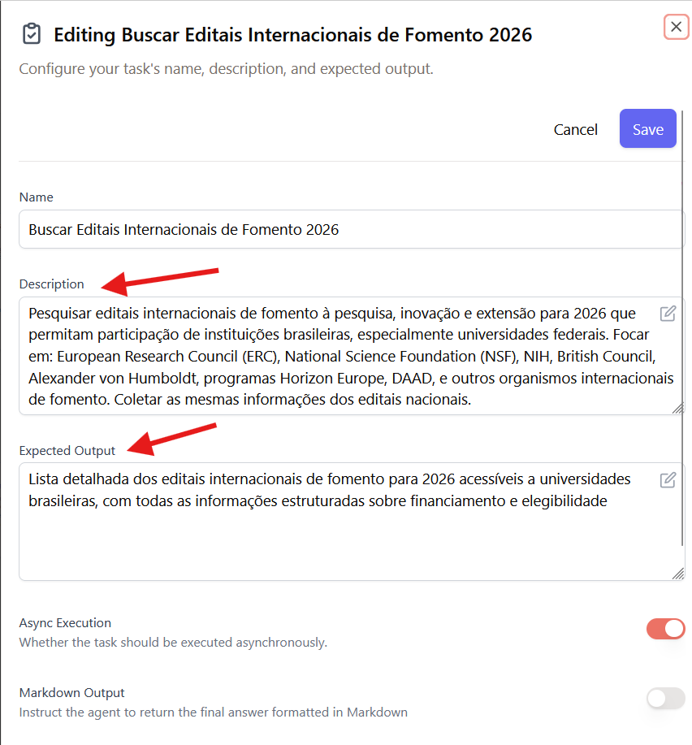
Logicamente, é repassado para o segundo agente Consultor, as tarefas de inicialmente efetuar as tarefas finais para filtrar editais de universidades federais e relatórios. Nisso a Figura 9, tem como tarefa descrita no seu prompt: “Analisar todos os editais coletados e filtrar apenas aqueles onde Universidades Federais brasileiras são explicitamente elegíveis como proponentes ou parceiras. Para cada edital elegível, avaliar: 1) Adequação aos objetivos institucionais de universidades federais, 2) Potencial de impacto para a instituição (alto, médio, baixo), 3) Complexidade de aplicação, 4) Alinhamento com áreas prioritárias de pesquisa. Remover editais que não se aplicam a universidades federais.”
Na Saída esperada, completamos com: “Lista refinada de editais específicos para universidades federais com análise de impacto potencial e recomendações estratégicas para cada oportunidade identificada.”
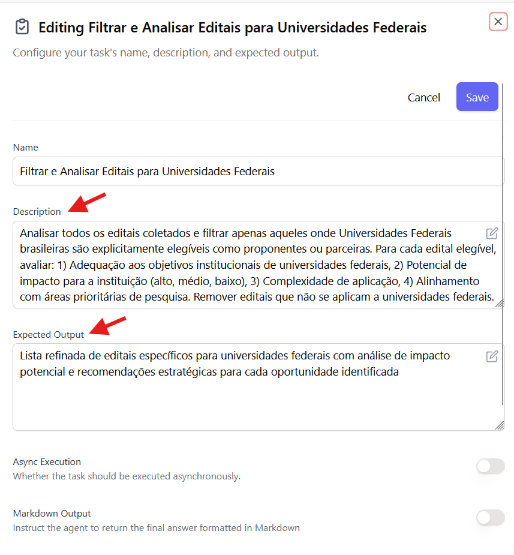
Em seguida pelo fluxo, o resultado dessa tarefa será repassada para última tarefa, figura 10, que foi configurada com o seguinte prompt: “Criar um Relatório Executivo completo em formato Markdown e CSV organizando todos os editais filtrados para Universidades Federais. O relatório deve incluir: 1) Resumo executivo com estatísticas gerais, 2) Tabela principal com: Órgão Financiador, Objeto do Edital, Valor Máximo do Financiamento, Prazo de Submissão, Impacto Potencial, 3) Análises por categoria (nacionais vs internacionais), 4) Recomendações estratégicas, 5) Calendário de submissões prioritárias. Exportar também em formato CSV para análise posterior.”
Na Saída esperada, completamos com: “Relatório Executivo em Markdown e arquivo CSV com todos os editais organizados, incluindo análises estratégicas e recomendações para universidades federais brasileiras e trazer obrigatoriamente os links correspondentes aos editais.”
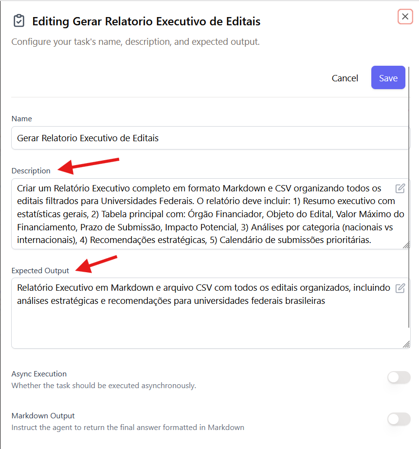
5° Passo: Executar e Coletar
Para executar o fluxo de trabalho é necessário clicar no botão de execução, indicado na figura 10, pela seta 1, em seguida continuar a execução clicando no botão “Execute”, indicado pela seta 2.
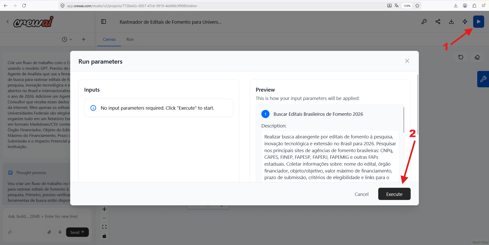
Repare que ao final do processameto todos as tarefas mundam o status para completado, conforme a figura 12.
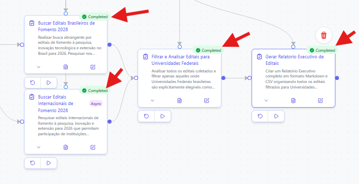
6° Passo: Analisar os Resultados
Na Figura 13, os resultados do processamento podem ser visualizados na aba ‘Run’, que também permite acompanhar o passo a passo da execução das tarefas.
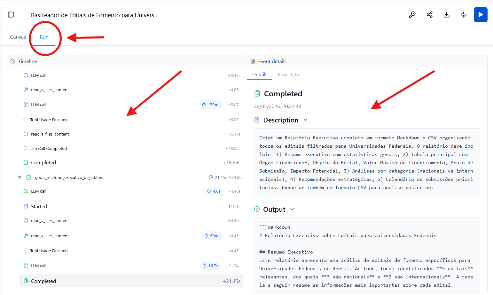
Outra forma de acompanhar o resultado é através do componente da tarefa, que possuí o ícone de visualização do resultado (figura 14).
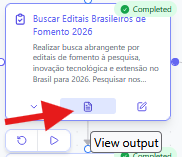
Para facilitar a leitura, os resultados da execução são apresentados no formato Markdown (Figura 15).
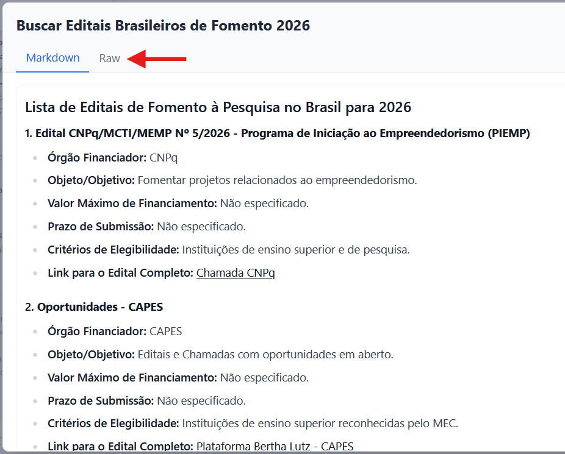
Caso o resultado seja insatisfatório, ou apresente dados ausentes e falhas de formatação, é necessário ajustar as tarefas na caixa de saída correspondente (Expected Output) e executar novamente o fluxo de trabalho. Na figura 16, foi acrescido a informação que seria obrigatório a presença do link correspondentes aos editais selecionados.
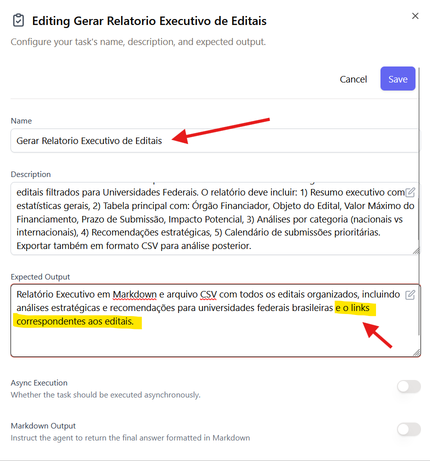
Na figura 16, é possível verificar a correção e melhoria do dados esperado para uso institucional.
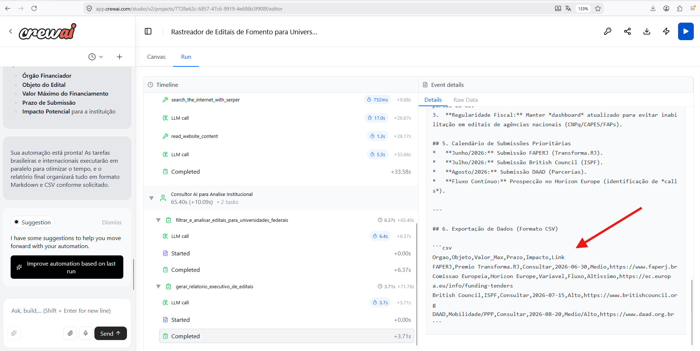
7° Passo: Verificar as configurações das Conexões (LLM e Ferramentas)
Novas configurações para uso de modelos de LLM, podem ser falcilmente realizada, pelo item do menu LLM Connections (Figura 18).
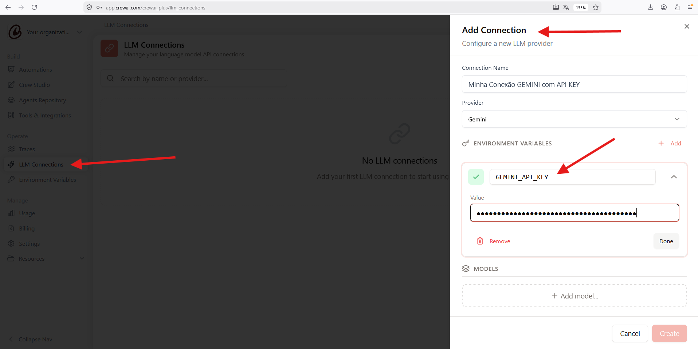
A configuração de novos modelos de linguagem (LLMs) é simples e pode ser feita diretamente pelo menu LLM Connections. Para isso, basta clicar em adicionar, dar um nome à conexão, selecionar o provedor desejado e informar a respectiva chave de API (gerada no site do fornecedor do modelo). Após selecionar os modelos associados a essa chave, clique no botão ‘Create’. Pronto! A nova conexão estará disponível para ser utilizada em seus fluxos de trabalho.
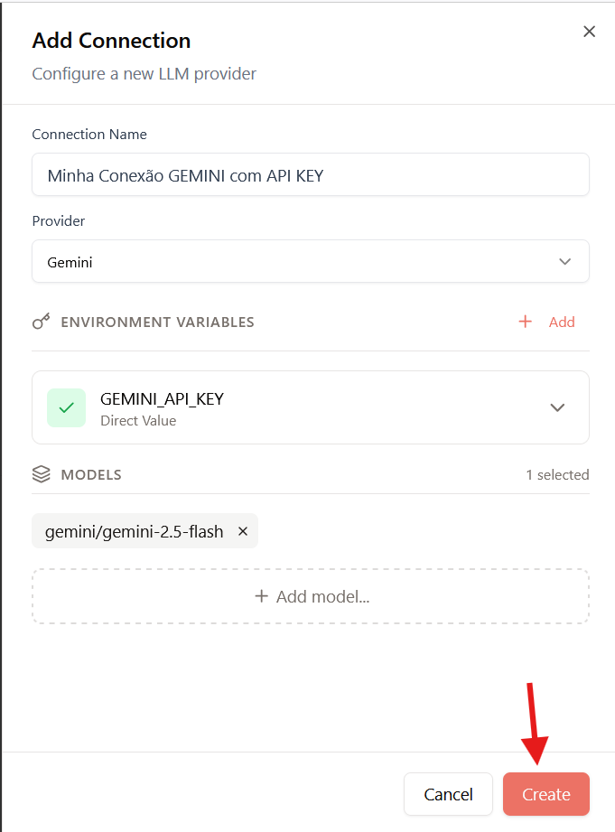
Depois deste procedimento, será necessário voltar aos agentes do fluxo de trabalho e alterar para o novo modelo de LLM e executar novamente o fluxo de trabalho. Nota-se que a mudança de modelo de LLM, altera o resultado esperado (Figura 20).
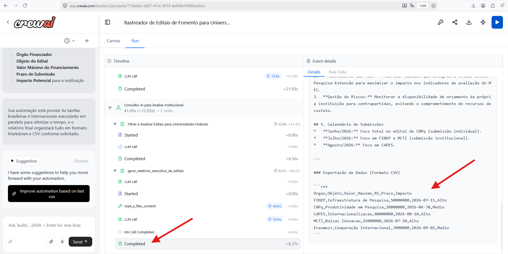
8° Passo: Agendamento de Eventos
Na figura 21, é possível efetuar o agendamento periódico da execução do fluxo de trabalho, configurando o componente identificado como Triggers da Figura 4, seta 7. Após configurar a frequência na semana, dia e horário, precisa clicar no botão “Save Trigger” e manter o sistema aberto neste período.
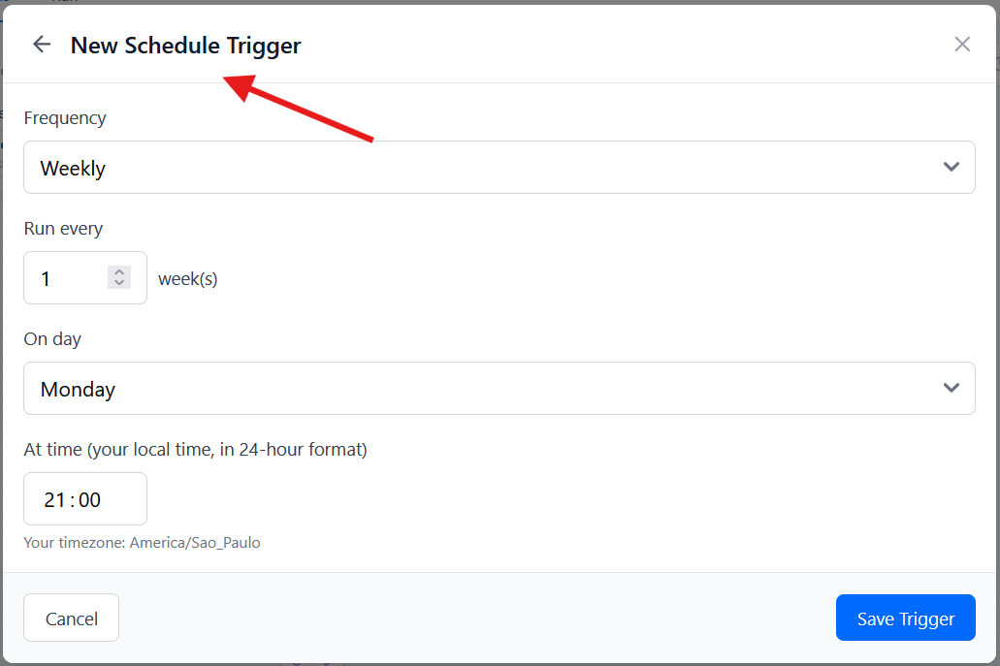
Consultando a saída dos Relatórios Executivos de Saída e CSV gerado
Para consultar as saídas prováveis dos Relatórios Executivos gerados pelo agente, você pode fazer o download direto dos arquivos de exemplo através do repositório oficial do projeto:
Caso apareçam mensagens de erro no final da execução devido à transição para um novo modelo de LLM, repita o procedimento conforme a Figura 11. Na maioria das vezes, uma nova execução resolve o problema. E também o Crew Studio pode gerar um fluxo diferenciado do apresentado aqui nesta laboratório, com a mesma descrição para construção, devido a IA toma como baseem padrões estatísticos.
Como vimos neste laboratório, o Crew Studio é uma ferramenta relevante para automatizar de forma ágil demandas do escritório de dados que necessitam extrair informações da web, respondendo prontamente a questões estratégicas e emergentes e de apoio à tomada de decisão institucional.